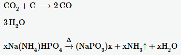

According to the pq formula, for any function of the form x^2+px+q the zero points can be calculated as follows:
x_{1/2} = \frac{p}{2} \pm \sqrt{{(\frac{p}{2}})^2-q}
<div class="deck-container" style="margin-left:20px;">
<section class="slide">
<span class="latex">e=mc^2</span><br><br>
<span class="latex">(\frac{x^2}{y^3})</span><br><br>
<span class="latex">[\begin{array}{cc} \sqrt{x} & 2 \\ 3 & x^4 \end{array}]</span><br><br>
<span class="latex">
f(n) = \left\{
\begin{array}{l l}
n/2 & \mbox{if } n \mbox{ is even}\\
-(n+1)/2 & \mbox{if } n \mbox{ is odd}
\end{array}
</span><br><br>
<span class="latex">a^2 + \frac{1}{\sqrt{a^2 + \frac{1}{\sqrt{a^2 + \frac{1}{\sqrt{a^2 + b^{\infty}}}}}}}</span><br><br>
<span class="latex">
\begin{pmatrix}
1 & a_1 & a_1^2 & \cdots & a_1^n \\
1 & a_2 & a_2^2 & \cdots & a_2^n \\
\vdots & \vdots& \vdots & \ddots & \vdots \\
1 & a_m & a_m^2 & \cdots & a_m^n
\end{pmatrix}
</span></section>
<br><br>
<p>According to the pq formula, for any function of the form <span class="latex"> x^2+px+q </span> the zero points can be calculated as follows:</p>
<p>
<span class="latex">x_{1/2} = \frac{p}{2} \pm \sqrt{{(\frac{p}{2}})^2-q}</span></p>
</section>
<br>
</div>
In MathJax the following code
\ce{CO2 + C -> 2 CO}
\ce{3H2O}
\ce{x Na(NH4)HPO4 ->[\Delta] (NaPO3)_x + x NH3 ^ + x H2O}
would be rendered as follows:

That is not possible with SimpleMath.
In my view, in most cases the capabilities of SimpleMath are good enough for the use in websites. The fact that it is fully working offline is a real advantage.
The disadvantages seem minor to me. Therefore, SimpleMath can be a real alternative to MathJax.